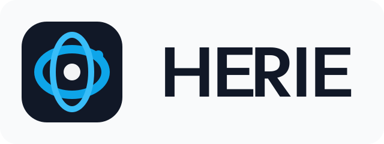

BuyWhere Board Review
Draft logo directions for the agent-native catalog layer
These are work-in-progress concepts for board selection, not final publication. The recommendation is Concept 01 because it carries the strongest infrastructure signal while staying compact enough for website chrome, favicon use, and partner application forms.
Recommended
Concept 01: Signal Grid
- Structured symbol built from routing lanes and a rounded grid tile.
- Feels like indexed infrastructure rather than a shopping brand.
- Scales cleanly into square favicon and docs navigation.

Option
Concept 02: Meridian Loop
- Orbital motion and central node suggest global agent commerce routes.
- Softer and more networked, but less unmistakably infrastructural.
- Strong fit if the company wants a more international platform feel.
Option
Concept 03: Market Node
- Linked nodes form a directional `W` with marketplace energy.
- Most dynamic of the set, but also closest to category clichés.
- Best reserved if BuyWhere wants to lean more into commercial aggregation.
Draft supporting files live alongside this page, including the favicon study and the written brand rationale in buywhere-brand-directions.md.